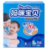
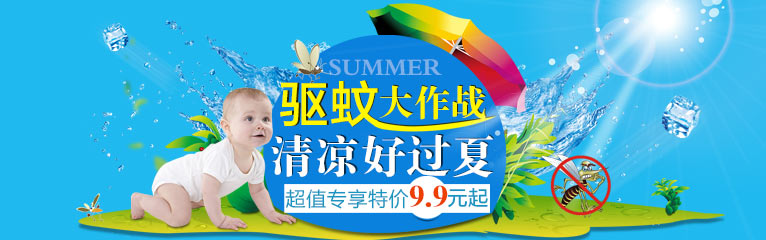
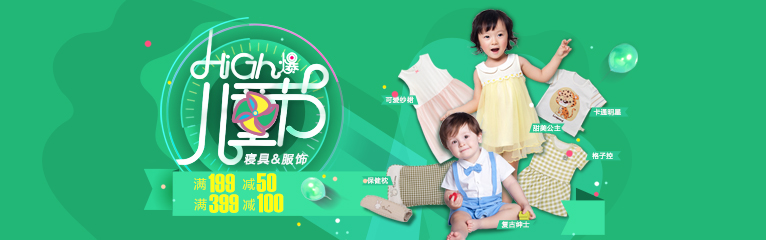

婴儿尿裤湿巾系列
宝宝从出生到能够大小便自理，尿不湿一直陪伴着婴儿，几乎就是婴儿的第二层肌肤，一款好的尿不湿对于婴儿来说非常重要。樱宝宝尿不湿由于柔软且透气性好，吸水性强，具备天然抗菌功能，舒服且不易产生异味，容易清洗等特点，倍受到妈妈们的喜欢

婴儿洗护用品
婴儿洗护用品就婴儿日常护理必备的用品，包括淋浴液、润肤露、按摩油、痱子粉、乳液等。因为婴儿的皮肤比较薄，特别娇嫩，所以家长在为孩子选购此类用品时，应选择无香精、着色剂等添加剂的用品，避免刺激宝宝的肌肤，引起过敏反应

婴儿服装
体温调节功能不完善，皮肤娇嫩，抵抗力差，同时活动较多，出汗多，皮脂腺分泌多，如选择的不合适，有害物质易通过娇嫩的皮肤侵袭婴儿，增加感染的机会。所以，为1～3个月的婴儿科学地选择服装，对婴儿的身心健康有重要意义